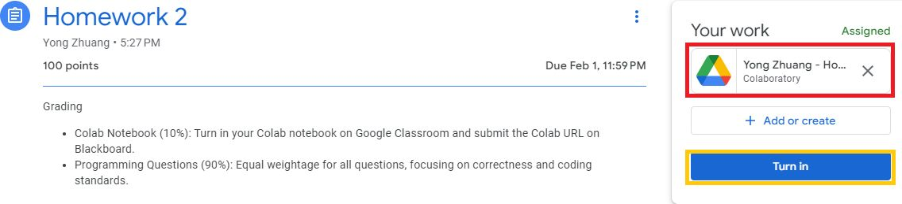

Homework 5#
Exploring Neural Network Architectures in Time Series Prediction
Objective#
The objective of this assignment is to explore the relationship between neural network architecture and its efficacy in forecasting time series data. We aim to investigate how varying architectural elements can impact the model’s predictive capabilities. This will help us understand the importance and complexity of architectural design in data mining and develop strategies for enhancing neural network performance.
Approach#
For this assignment, you will employ rolling prediction to evaluate the performance of different neural network models.
Rolling Prediction: Rolling Prediction simulates a realistic scenario where each future time step is predicted one at a time, and each prediction is fed back as input for the next prediction. This method mimics a real-world situation where each prediction depends on the previous ones, and the model does not have access to future data. It is particularly useful for evaluating how well a model adapts to new data and its effectiveness in a continuously updating environment.
Background#
You will use the Melbourne daily temperatures dataset, which includes daily maximum temperatures in Melbourne, Australia from 1981-1990.
Tasks#
Learn the sample code
Review the sample code in Forecasting Air Passenger Traffic to understand the baseline neural network structure used for time series prediction.
Familiarize yourself with key model components such as LSTM layers, Dense(fully connected) layers, Conv1D layers, dropout, normalization, and regularizations.
Build, train, and evaluate neural networks
Model Development:
Build LSTM, LSTM with an attention mechanism, CNN, and Transformer models that use data from the past 4 weeks as input to predict the next day’s temperature.
Train each model on the training set and monitor performance on the validation set.
Use rolling prediction to evaluate model performance on predicting the next year’s temperatures.
Modifying Network Architecture
You are encouraged to modify the network architecture in various ways, including but not limited to:
Regularization Adjustments: Add or remove regularization (e.g.,
kernel_regularizer=l2(l2_reg)) in different layers.Dropout Rate Changes: Experiment with different dropout rates and observe their impacts on model performance.
Normalization Layer Adjustments: Implement or omit normalization layers (e.g.,
LayerNormalization()) and assess the outcomes.Layer Parameter Modifications: Alter layer parameters such as the number of units in LSTM and Dense layers, filter count and kernel size in Conv1D layers, and switch between activation functions like
relu,sigmoid,tanh, etc.Architecture Alterations: Add or remove various layer types, including LSTM, Dense, and Conv1D layers. Modify transformer parameters such as
ff_dim,num_heads, andhead_size.
Performance Analysis:
After each architectural change, retrain the model and evaluate how the modifications influence performance.
Report Writing:
Compile a detailed report that analyzes the effects of each modification on the model’s performance. Discuss potential reasons for performance improvements or declines.
Support your analysis with visualizations like graphs or charts for added clarity.
Conclude with your insights on how different architectural elements impact a neural network’s performance in time series prediction.
Grading#
Grading Item |
Points |
|---|---|
Building, Training, and Evaluating an LSTM Model with Rolling Prediction |
15 |
Building, Training, and Evaluating an LSTM(with an attention mechanism) Model with Rolling Prediction |
15 |
Building, Training, and Evaluating an CNN Model with Rolling Prediction |
15 |
Building, Training, and Evaluating an Transformer Model with Rolling Prediction |
15 |
Summary and Analysis |
40 |
Access and Submission#
Begin your Homework through here.
Start your work by accessing the Colab file marked within the red box.
Once you’ve completed the homework, click “Turn in” to submit.
